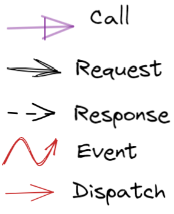

unibo.basicomm23¶
Il progetto intende realizzare il concetto di Interconnessione, fornendo supporti di tipo generale per le comunicazioni via rete mediante un insieme di protocolli.
Protocolli punto-a-punto come TCP, HTTP, CoAP, etc.
sono in grado di stabilire una connessione stabile sulla quale inviare e ricevere messaggi.
Il protocollo UDP non stabilisce una connessione, ma può comunque essere usato per inviare messaggi
e ricevere risposte.
Interconnessione¶
Nel seguito, useremo il termine Interconnessione nel senso astratto di canale di comunicazione bidirezionale tra due end-points.
A partire da questo concetto, introdurremmo un insieme di interfacce e classi:
Metodi comuni a ogni Interconnessione |
|
Classe astratta per la implementazione di Interaction |
|
Interfaccia standard dei messaggi |
|
Classe di implementazione dei messaggi |
|
Interfaccia per gli oggetti di gestione dei messaggi ricevuti |
|
unibo.basicomm23.interfaces.Interaction¶
Un oggetto che implementa l’interfaccia Interaction realizza in modo concreto il concetto astratto di Interconnessione usando uno specifico protocollo. Ogni metodo rappresenta una modalità di invio (forward/reply/request) o di ricezione (receiveMsg) di informazione dal punto di vista applicativo. |
interface Interaction {
public void forward( String msg ) throws Exception;
public String request( String msg ) throws Exception;
public void reply( String msg ) throws Exception;
public String receiveMsg( ) throws Exception;
public void forward( IApplMessage msg ) throws Exception;
public IApplMessage request( IApplMessage msg ) throws Exception;
public void reply( IApplMessage msg ) throws Exception;
public IApplMessage receive( ) throws Exception ;
public void close( ) throws Exception;
}
La creazione di oggetti di questo tipo è affiadata alla ConnectionFactory. |
L’informazione scambiata è rappresenta in due modi:
con una
String, che è un tipo di dato presente in tutti i linguaggi di programmazione. I metodi che usanoStringnon impongono particolari vincoli sulla struttura sintattica e semantica della stringa-messaggio, ma proprio per questo possono causare problemi di interpretazione;con un oggetto di tipo IApplMessage, che rappresenta uno standard interno sulla struttura delle informazioni scambiate via rete:. I metodi che usano
IApplMessageverranno implementati da supporti che invieranno e riceverannoStringdella forma descritta in Struttura dei messaggi.
Il metodo
forwardè un metodo di trasmissione ‘fire-and-forget’, mentre il metodorequestdenota l’invio di informazione cui deve corrispondere una ack o una response da parte del ricevente.Concettualmente, un componente che invia una response/ack sulla comunicazione connessa con un client, effettua una operazione di
reply, assimilabile allaforwarddi un messaggio con appropriato contenuto informativo.La
Stringrestituita dal metodoreceiveMsgrappresenta un messaggio qualsiasi, tra cui la risposta a un messaggio inviato in precedenza conforward.Il metodo
receiverestituisce un messaggio organizzato secondo Struttura dei messaggi.
Natura e struttura dei messaggi applicativi¶
I messaggi sono logicamente suddivisi in diverse categorie:
enum ApplMessageType{ event, dispatch, request, reply, invitation }
Tipi di messaggi¶
|
 |
{kind=link}
Struttura dei messaggi¶
Le stringhe che denotano messaggi IApplMessage hanno la forma:
msg( MSGID, MSGTYPE, SENDER, RECEIVER, CONTENT, SEQNUM )
ove
- MSGID: identificativo del messaggio - MSGTYPE: tipo del msg (Dispatch, Invitation,Request,Reply,Event) - SENDER: nome del componente che invia il messaggio - CONTENT: contenuto applicativo (payload) del messaggio - RECEIVER: nome del componente chi riceve il messaggio - SEQNUM: numero di sequenza del messaggio
Questa struttura costituisce uno standard interno sulla struttura delle stringhe-messaggio scambiate via rete.
Sintassi delle stringhe-messaggio¶
La rappresentazione in forma di String dei messaggi segue (per motivi ‘storici’) le regole della sintassi Prolog.
In particolare:
gli identificatori
MSGID,SENDER,RECEIVERsono espressi da atomi Prolog formati da lettere minuscole;MSGTYPEè un atomo prefissato:dispatch, request, reply, event;CONTENTè un termine Prolog;SEQNUMè un intero.
unibo.basicomm23.interfaces.IApplMessage¶
Un oggetto che implementa l’interfaccia IApplMessage rappresenta un messaggio che segue uno standard interno sulla struttura delle informazioni scambiate via rete. |
public interface IApplMessage {
public String msgId();
public String msgType();
public String msgSender();
public String msgReceiver();
public String msgContent();
public String msgNum();
public boolean isDispatch();
public boolean isRequest();
public boolean isReply();
public boolean isEvent();
}
|
unibo.interaction.msg.ApplMessage¶
La classe che implementa IApplMessage segue la Sintassi delle stringhe-messaggio. |
public class ApplMessage implements IApplMessage {
//Costruttori
public ApplMessage( String MSGID, String MSGTYPE,
String SENDER, String RECEIVER, String CONTENT, String SEQNUM ) { ... }
public ApplMessage( String msg ) {
Struct msgStruct = (Struct) Term.createTerm(msg);
...
}
//Predicati
public boolean isDispatch(){
return msgType.equals( ApplMessageType.dispatch.toString() );
}
public boolean isRequest(){ ... }
public boolean isReply(){ ... }
...
}
|
unibo.basicomm23.msg.ProtocolType¶
Per ogni protocollo viene definito un package che ne contiene i supporti low-level.
public enum ProtocolType {
http, ws, tcp, udp, coap, mqtt, bluetooth, serial
}
|
{kind=link}
Per ogni protocollo viene definito un oggetto di supporto che implementa Interaction come specializzazione della classe Connection.
Per costruire un oggetto di supporto alla connessione realizzata mediante uno speciifoc protocoll, si può usare una Factory.
unibo.basicomm23.utils.ConnectionFactory¶
Un Factory che restituisce un supporto per realizzare connessioni punto-a-punto secondo diversi protocolli.
ConnectionFactory.createClientSupport¶
|
public class ConnectionFactory {
/*1*/public static Interaction createClientSupport(
ProtocolType protocol,
String hostAddr,
/*2*/ String entry ) {
try {
switch( protocol ){
case http: {
return HttpConnection.create( host ); }
case ws : {
return WsConnection.create( host, entry ); }
case tcp : {
return TcpConnection.create(host,Integer.valueOf(entry));}
case udp : {
return UdpConnection.create(host,Integer.valueOf(entry));}
case coap: {
return CoapConnection.create(host, entry); }
case mqtt: {
return MqttConnection.create("clientcomm",host,entry); }
...
}
}
|
L’oggetto di supporto alle comunicazioni restituito dalla factory implementa l’interfaccia Interaction, nascondendo al livello applicativo i dettagli relativi al protocollo.
Ogni oggetto di supporto specializza la classe astratta unibo.basicomm23.utils.Connection
che gestisce messaggi di tipo IApplMessage
realizzando i metodi che trattano messaggi di tipo String.
unibo.basicomm23.utils.Connection¶
E’ una classe astratta che rappresenta
l’idea generale di Interconnessione implementando le operazioni di
Interaction
con argomenti di tipo IApplMessage,
invocando le omonime operazioni con argomenti Se la variabile boolean trace è posta I metodi abstract sono realizzati da classi che specializzano Connection per un determinato protocollo: TcpConnection, UdpConnection, HttpConnection, WsConnection, CoapConnection, MqttConnection |
public abstract class Connection implements Interaction{
public boolean trace = false;
@Override
public void forward(IApplMessage msg)
throws Exception{
forward( msg.toString() );
}
@Override
public IApplMessage request(IApplMessage msg)
throws Exception{
String answer = request(msg.toString());
return new ApplMessage(answer);
}
@Override
public IApplMessage request(IApplMessage msg, int tout)
throws Exception{
//Requst che genera una eccezione
//se la risposta non giunge entro il timeout specificato
}
@Override
public IApplMessage receive() throws Exception{
String msg = receiveMsg();
return new ApplMessage(msg);
}
@Override
public void reply(IApplMessage msg) throws Exception{
reply(msg.toString());
}
@Override
public abstract void forward(String msg) throws Exception;
@Override
public abstract String request(String msg) throws Exception;
@Override
public abstract void reply(String reqid) throws Exception;
@Override
public abstract String receiveMsg() throws Exception;
@Override
public abstract void close() throws Exception;
}
|
unibo.basicomm23.tcp.TcpConnection¶
TcpConnection: impostazione
|
public class TcpConnection
/*1*/ extends Connection {
private DataOutputStream outputChannel;
private BufferedReader inputChannel;
private Socket socket;
private int port;
/*2*/public static Interaction create(
String host, int port) throws Exception{
for( int i=1; i<=10; i++ ) {
try {
Socket socket = new Socket( host, port );
Interaction conn = new TcpConnection( socket );
return conn;
}catch(Exception e) {
ColorsOut.out(" +++ TcpConnection | Another attempt ...");
Thread.sleep(500);
}
}
throw new Exception(" +++ TcpConnection ERROR");
}
/*3*/public TcpConnection( String host, int port ) throws Exception {
this( new Socket( host, port ) );
}
/*4*/public TcpConnection( Socket socket ) throws Exception {
this.socket = socket;
OutputStream outStream = socket.getOutputStream();
InputStream inStream = socket.getInputStream();
outputChannel = new DataOutputStream(outStream);
inputChannel = new BufferedReader(new InputStreamReader(inStream));
}
|
TcpConnection come Connection |
@Override
/*1*/public void forward(String msg) throws Exception {
try {
outputChannel.writeBytes( msg+"\n" );
outputChannel.flush();
} catch (IOException e) { ... }
}
@Override
/*2*/public String request(String msg) throws Exception {
forward( msg );
return receiveMsg();
}
@Override
/*3*/public void reply(String msg) throws Exception {
forward(msg);
}
@Override
/*4*/public String receiveMsg() {
try {
String line = inputChannel.readLine() ;
return line;
} catch ( Exception e ) {
return null;
}
}
@Override
/*5*/public void close() {
try {
socket.close();
} catch (IOException e) { ... }
}
|
unibo.basicomm23.udp.UdpConnection¶
UdpConnection: impostazione
|
public class UdpConnection
/*1*/ extends Connection {
public static final int MAX_PACKET_LEN = 1025;
public static final String closeMsg = "@+-systemUdpClose@+-";
protected DatagramSocket socket;
protected UdpEndpoint endpoint;
protected boolean closed;
public static Interaction create(
String host, int port) throws Exception {
DatagramSocket socket = new DatagramSocket();
InetAddress address = InetAddress.getByName(host);
UdpEndpoint server = new UdpEndpoint(address, port);
Interaction conn = new UdpConnection(socket, server);
return conn;
}
public UdpConnection(
DatagramSocket socket, UdpEndpoint endpoint) throws Exception {
closed = false;
this.socket = socket;
this.endpoint = endpoint;
}
|
UdpConnection come Connection |
@Override
/*1*/public void forward(String msg) throws Exception {
if (closed) {
throw new Exception("The connection is closed");
}
try {
byte[] buf = msg.getBytes();
DatagramPacket packet = new DatagramPacket(
buf,buf.length,endpoint.getAddress(),endpoint.getPort());
socket.send(packet);
} catch (IOException e) {
throw e;
}
}
@Override
/*2*/public String request(String msg) throws Exception {
forward( msg );
String answer = receiveMsg();
return answer;
}
@Override
/*3*/public void reply(String msg) throws Exception {
forward(msg);
}
@Override
/*4*/public String receiveMsg() {
String line;
try {
if(closed) {
line = null;
}else {
byte[] buf = new byte[UdpConnection.MAX_PACKET_LEN];
DatagramPacket packet = new DatagramPacket(buf, buf.length);
socket.receive(packet); //CREA UN Thread
line = new String(packet.getData(), 0, packet.getLength());
if( line.equals(closeMsg)) {
close();
}
packet = null;
}
return line;
} catch ( Exception e ) {
return null;
}
}
@Override
/*5*/public void close() {
try {
forward(closeMsg);
} catch (Exception e) {...}
closed = true;
socket.close();
}
}
|
unibo.basicomm23.http.HttpConnection¶
La implementazione di Interaction per HTTP non pone particolari problemi: si tratta di utilizzare una libreria che fornisce un HTTP-client. Qui usiamo la libreria org.apache.http.
HttpConnection: impostazione
|
public class HttpConnection
/*1*/ extends Connection {
/*2*/private static HashMap<String, HttpConnection> connMap =
new HashMap<String, HttpConnection>();
/*3*/private HttpClient client = HttpClients.createDefault();
private String URL;
//Factory
/*4*/public static Interaction create(String addr ){
if( ! connMap.containsKey(addr)){
connMap.put(addr, new HttpConnection( addr ) );
}
return connMap.get(addr);
}
//Costruttore
/*5*/public HttpConnection(String url) {
URL = "http://" +url;
}
|
HttpConnection come Connection I metodi di Interaction con argomenti I metodi |
@Override
public String request(String msg) throws Exception {
return sendHttp( msg );
}
@Override
public void forward( String msg) throws Exception {
sendHttp( msg ); //answer ingnored
}
@Override
public void reply(String msgJson) throws Exception {
throw new Exception("HttpConnection does not implement reply");
}
@Override
public String receiveMsg() throws Exception {
throw new Exception("HttpConnection does not implement receiveMsg");
}
|
HttpConnection sendHttp Metodo usato per realizzare l’invio di messaggi in forma di |
public String sendHttp( String msgJson){
...
HttpPost httpPost = new HttpPost( URL );
httpPost.setEntity(new StringEntity(msgJson));
HttpResponse response = client.execute(httpPost);
return EntityUtils.toString( response.getEntity() );
}
|
HttpConnection getHttp Metodo per comunicazioni HumanToMachine () con |
public String getHttp( String msg){
...
}
|
HttpConnection callHttp Metodo per comunicazioni MAchineToMachine () con |
public JSONObject callHttp( String msg){
...
}
|
unibo.basicomm23.ws.WsConnection¶
La implementazione di Interaction per WS (WebSocket) induce a modifiche rilevanti nella struttura del codice applicativo, in quanto le interazioni sono asincrone.
Inoltre, su una WS-connection possono giungere informazioni che sono risposte a messaggi inviati in precedenza o anche di altro tipo (ad esempio dati di un sensore, allarmi, messaggi di stato, etc.).
Per meglio gestire queste informazioni in ingresso, questo tipo di connessione è stato realizzato come un POJO osservabile (che implementa IObservable), in modo da permettere al livello applicativo di gestire i messaggi in arrivo da parte di ossservatori che implementano IObserver.
Implementa il concetto di Interconnessione
(interfaccia Interaction)
su WebSocket, utilizzando la libreria javax.websocket.
WsConnection Impostazione
|
/*1*/@ClientEndpoint
public class WsConnection
/*2*/ extends Connection
/*3*/ implements IObservable{
/*4*/private static HashMap<String,WsConnection> connMap=
new HashMap<String,WsConnection>();
/*5*/private Vector<IObserver> observers=
new Vector<IObserver>();
/*6*/private Session userSession = null;
/*7*/private String answer = "unknown";
/*8*/private String entry = "";
//Costruzione
...
//Metodi perchè ClientEndpoint
...
//Metodi perchè Connection
...
//Metodi perchè IObservable
...
|
WsConnection Costruzione
|
//Factory Method
/*1*/public static WsConnection create(String addr, String entry){
if( ! connMap.containsKey(addr)){
connMap.put(addr, new WsConnection( addr,entry ) );
}else {
//ALREADY connected to " + addr ;
}
return connMap.get(addr);
}
/*2*/private WsConnection( String addr, String entry ) {
this.entry = entry;
wsconnect(addr);
}
/*3*/private void wsconnect(String wsAddr){
try {
WebSocketContainer container =
ContainerProvider.getWebSocketContainer();
URI uri = new URI("ws://"+wsAddr);
container.connectToServer(this, uri);
} catch ( Exception ex) {
...
}
}
|
WsConnection come ClientEndpoint¶
WsConnection come ClientEndpoint
Nota: l’aggiornamento degli observer potrebbe essere delegato a un nuovo Thread, per evitare di dare questa responsabilità alla connessione. |
@OnOpen
/*1*/public void onOpen(Session userSession) {
this.userSession = userSession;
}
@OnClose
/*2*/public void onClose(Session userSession, CloseReason reason) {
this.userSession = null;
}
@OnMessage
/*3*/public void onMessage(String message) {
curInfo = message;
updateObservers(message);
}
/*4*/protected void updateObservers( String msg ){
observers.forEach( v -> v.update(null, msg) );
}
|
WsConnection as Connection¶
WsConnection come Connection
|
/*1*/public void sendMessageSynch(String message )
throws Exception {
userSession.getBasicRemote().sendText(entry+"/"+ message);
//blocks until the message has been transmitted
}
/*2*/public void sendMessageAsynch(String message )
throws Exception {
userSession.getAsyncRemote().sendText(entry+"/"+ message);
}
@Override
/*3*/public void forward( String msg) throws Exception {
sendMessageSynch(msg);
}
@Override
/*4*/public String request(String msg) throws Exception {
forward(msg);
return receiveMsg();
}
@Override
/*5*/public void reply(String msg) throws Exception {
forward(msg);
}
@Override
/*6*/public String receiveMsg() throws Exception {
while( curInfo.equals("unknown") ) {
Thread.sleep(300);
}
return curInfo;
}
@Override
/*7*/public void close() throws Exception {
userSession.close();
}
|
WsConnection come IObservable¶
WsConnection come IObservable
|
@Override
/*1*/public void addObserver(IObserver obs) {
observers.add( obs);
}
@Override
/*2*/public void deleteObserver(IObserver obs) {
observers.remove( obs);
}
|
unibo.basicomm23.coap.CoapConnection¶
CoapConnection impostazione
|
public class CoapConnection
/*1*/ extends Connection {
protected CoapClient client;
protected String url;
private String answer = "unknown";
public static Interaction create(
String host, String path) throws Exception {
return new CoapConnection(host,path);
}
public CoapConnection( String address, String path) {
//"coap://localhost:5683/" + path
setCoapClient(address,path);
}
protected void setCoapClient(
String addressWithPort, String path) {
url = "coap://"+addressWithPort + "/"+ path;
client = new CoapClient( url );
client.useExecutor(); //To be shutdown
client.setTimeout( 1000L );
}
|
CoapConnection come Connection¶
CoapConnection come Connection |
@Override
/*1*/public void forward(String msg) {
if( client != null ) {
CoapResponse resp = client.put(msg, MediaTypeRegistry.TEXT_PLAIN); //Blocking!
if( resp != null ) {
answer = resp.getResponseText();
}else {
CommUtils.outred(" +++ CoapConn | forward - resp null for " + msg );
}
}
}
@Override
/*2*/public String request(String query) {
String param = query.isEmpty() ? "" : "?q="+query;
client.setURI(url+param);
CoapResponse response = client.put(query, MediaTypeRegistry.TEXT_PLAIN);
if( response != null ) {
answer = response.getResponseText();
return answer;
}else {
return null;
}
}
@Override
/*3*/public void reply(String reqid) throws Exception {
throw new Exception( " +++ CoapConn | reply not allowed");
}
@Override
/*4*/public String receiveMsg() throws Exception {
while( answer.equals( "unknown" ) ){
Thread.sleep(500);
}
return answer;
}
@Override
/*5*/public void close() {
client.shutdown();
}
}
|
CoapConnection come¶
CoapConnection impostazione
|
public String toString(){
return url;
}
public void removeObserve(CoapObserveRelation relation) {
relation.proactiveCancel();
}
public CoapObserveRelation observeResource(CoapHandler handler){
CoapObserveRelation relation =
client.observe( handler );
return relation;
}
|
unibo.basicomm23.mqtt.MqttConnection¶
MqttConnection: impostazione
|
public class MqttConnection
/*1*/ extends Connection {
...
}
|
I componenti di un sistema distribuito devono, di norma, essere capaci di
ricevere messaggi. Normalmente questo obiettivo viene raggiunto introducendo un server.
inviare messaggi. Normalmente questo obiettivo viene raggiunto facendo operare il componente come un client di un server .
Il progetto unibo.basicomm23 fornisce supporti per entrambe queste esigenze, attraverso classi che forniscono una sorta di ‘enti abilitatori’ alle comunicazioni.
Abilitatori di comunicazione¶
Parliamo di classi che abilitano alle comunicazioni per enfatizzare il fatto che queste classi non includono logica applicativa.
ServerFactory: costruisce server legati a speoifici protocolli.
ActorNaiveCaller: fornisce supporto per inviare messaggi a un server.
ServerFactory¶
Costruisce server che danno la capacità di ricevere messaggi usando uno dei protocolli definiti in ProtocolType.
unibo.basicomm23.enablers.ServerFactory¶
Realizza un server che riceve messaggi, delegandone la gestione a un oggetto che implementa IApplMsgHandler.
|
public class SeverFactory {
/*1*/ public static IServer create(String name, int port,
ProtocolType protocol, IApplMsgHandler handler){
return new ServerFactory(name, port, protocol, handler);
}
/*2*/ public SeverFactory(
String name, int port, ProtocolType protocol, IApplMsgHandler handler ){
...
setServerSupport( port, protocol, handler );
}
protected void setServerSupport(
int port, ProtocolType protocol, IApplMsgHandler handler) throws Exception{
/*
Attiva un server per tcp, udp, coap
*/
}
}
|
unibo.basicomm23.interfaces.IServer¶
public interface IServer {
public String getName();
public boolean isActive();
public void start();
public void stop();
}
Al momento la factory crea i seguenti server:
per il protocollo
Tcp: TcpServer .per il protocollo
Udp: UdpServer: .per il protocollo
Coap: CoapApplServer, che specializzaorg.eclipse.californium.core.CoapServer.
Inoltre:
per il protocollo
Mqtt, deve essere ovviamente usato uno dei broker disponibili come:per protocollo
HTTP, è opportuno usare una delle numerose piattaforme Web oggi disposbili, come ad esempio SpringBoot ->.
La gestione dei messaggi a livello applicativo è delegata a un oggetto definito dall’application designer (si veda ApplMsgHandler, che implementa l’interfaccia IApplMsgHandler secondo il seguente schema architetturale:
{kind=link}
unibo.basicomm23.enablers.ConnectionHandler¶
Gestisce i messaggi in arrivo su una connessione lato server e li ridirige all’handler applicativo dato.
|
public class ConnectionHandler
/*1*/ extends Thread{
private String name;
private IApplMsgHandler handler ;
private Interaction conn;
public ConnectionHandler(String name,
/*2*/ IApplMsgHandler handler, Interaction conn ) {
this.name = name;
this.handler = handler;
this.conn = conn;
this.start();
}
@Override
public void run() {
while( true ) {
try {
/*3*/String msg = conn.receiveMsg();
if( msg == null ) {
conn.close();
break;
} else{
/*4*/IApplMessage m = new ApplMessage(msg);
handler.elaborate( m, conn );
}
}catch( Exception e) { ... }
}
/*5*/}
}
|
unibo.basicomm23.interfaces.IApplMsgHandler¶
public interface IApplMsgHandler {
public String getName();
public void elaborate( IApplMessage message, Interaction conn );
}
Un oggetto che implementa l’interfaccia IApplMsgHandler deve essere definito dall’application designer per
specificare, data una Interaction conn,
il modo di gestire un messaggio ricevuto (metodo elaborate)
e come inviare repliche o risposte al chiamante su conn.
Oggetti di questo tipo sono usati dai server forniti da ServerFactory.
unibo.interaction.msg.ApplMsgHandler¶
public abstract class ApplMsgHandler implements IApplMsgHandler {
protected String name;
public ApplMsgHandler( String name ) { this.name = name; }
public String getName() { return name; }
public abstract void elaborate(IApplMessage message, Interaction conn) ;
}
ActorNaiveCaller¶
Permette a un oggetto applicativo di inviare messaggi usando uno dei protocolli definiti in ProtocolType. |
{kind=link}
unibo.basicomm23.enablers.ActorNaiveCaller¶
Realizza una prima versione di un attore capace di stabilire una Interconnessione con un server remoto
che opera su un nodo con hostAddr dato.
E’ definito cme una classe astratta che delega alle sue specializzazioni la definizione di un metodo
(body) che dovrà contenere il funzionamento logico di livello applicativo.
Il body verrà eseguito all’interno di un Thread creato dopo una esplicita attivazione (metodo activate). Prima della esecuzione del body, il Thread invoca il metodo connect per stabilire una connessione di tipo Interaction con il server, avvalendosi di ConnectionFactory. |
public abstract class ActorNaiveCaller
protected String name;
protected Interaction connSupport;
protected ProtocolType protocol;
protected String hostAddr;
protected String entry;
protected boolean connected = false;
public ActorNaiveCaller(String name,
ProtocolType protocol, String hostAddr, String entry){
this.name = name;
this.protocol = protocol;
this.hostAddr = hostAddr;
this. entry = entry;
}
protected abstract void body() throws Exception;
protected void connect(){
if( connected ) return;
connected = true;
connSupport = ConnectionFactory.createClientSupport(
protocol, hostAddr, entry);
}
public void activate(){
new Thread(){
public void run(){
try {
connect();
body();
} catch (Exception e) {...}
}
}.start();
}
|
Osservabili e osservatori¶
unibo.basicomm23.interfaces.IObserver¶
public interface IObserver extends java.util.Observer{
public void update( String value );
//public void update(Observable o, Object news) //From Observer
}
Notiamo che java.util.Observer è deprecated da Java9 in avanti. Dovremo approfondire le ragioni di ciò,
ma al momento osserviamo che non viene messa in discussione l’idea di osservabilità, ma solo il modo
in cui viene realizzata nel mondo della oop classica.
unibo.basicomm23.interfaces.IObservable¶
public interface IObservable {
public void addObserver(IObserver obs );
public void deleteObserver(IObserver obs );
}
La classe java.util.Observable implementa i metodi di IObservable, in quanto
IObserver estende java.util.Observer.
unibo.basicomm23.utilsApplAbstractObserver¶
La classe astratta unibo.basicomm23.utils.ApplAbstractObserver fornisce lo scheletro di un observer
che implementa IObserver, lasciando non specificato
il metodo public void update(String msg).
public abstract class ApplAbstractObserver implements IObserver{
@Override
public void update(Observable o, Object arg) {
update(arg.toString());
}
@Override
public abstract void update(String value);
}
unibo.basicomm23.utils.CommUtils¶
Nel package utils del progetto, viene definita la classe CommUtils che definisce
vari metodi static di utilità.
Metodi di uso comune¶
void delay(Int): per sospendere l’esecuzione del Thred correntevoid outxxx(String), conxxx=blue,red,grenn,yellow, ...per visualizzare messaggi colorati suSystem.out, una feature che risultà utile per differenzare le informazioni emesse dai diversi componenti delle nostre applicazioni
Metodi per la costruzione di messaggi¶
La classe definisce anche metodi statici che agevolano la costruzione e l’invio di messaggi applicativi
JSONObject parseForJson(String message)
IApplMessage buildDispatch(String sender, String msgId, String payload, String dest)
IApplMessage buildRequest(String sender, String msgId, String payload, String dest)
IApplMessage buildReply(String sender, String msgId, String payload, String dest)
IApplMessage prepareReply(IApplMessage requestMsg, String answer)
Il metodo prepareReply confeziona una reply relativa alla requestMsg data in ingresso, da cui
determina il nome del chiamante.
Metodi per modificare stringhe-messaggio¶
La trasmissione/ricezione di stringhe che contengono \n può spesso portare a malfunzionamenti.
Conviene dunque sostituire il carattere in trasmissione, per poi ripristinarlo in ricezione.
public static String convertToSend(String s){
return "'"+s.replace("\n","@!@")+"'";
}
public static String restoreFromConvertToSend(String s){
return s.replace("@!@","\n");
}